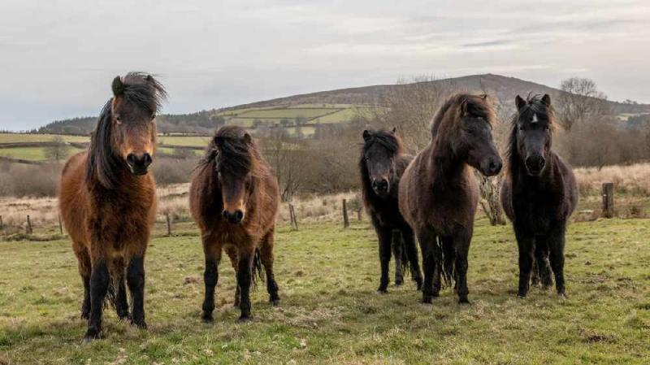
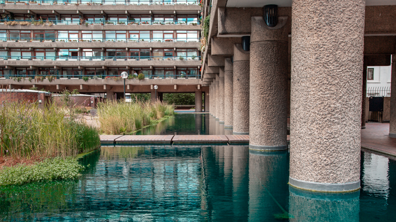

Hello! I'm Masha, or Mary as I go by in England.
I was born and raised in Moscow, where both my parents worked as scientists. After completing school, I pursued a degree in Economics and Engineering. I began my career in consulting, specialising in real estate valuation, which led to exciting projects and business trips.
Over time, I began to feel disconnected from the direction of my career and the environment in my country, which prompted me to move to England. Once here, I decided it was the perfect opportunity to explore something new. I started studying CS50: Introduction to Computer Science, followed by a data analytics training programme. Now, I’m thrilled to continue my journey into tech.

Some of the Technical Tools I've used so far:
- Programming languages
- Visualisation tools
Places of Interest
Here are some places I visited over the past two years and grew fond of.
| Place | Why is it great | Photo | Map |
|---|---|---|---|
| Dartmoor National Park | Offers breathtaking moorland landscapes, diverse wildlife, and scenic trails, making it a perfect destination for hiking and nature enthusiasts. |  | Directions |
| The Barbican Center | It is a masterpiece of brutalist architecture, offering a unique cultural experience with its striking design, world-class performances, and serene gardens amidst the urban landscape. |

|
Directions |
| Botany Bay in Kent | It is a lovely spot with golden sands, striking chalk cliffs, and a peaceful vibe that’s perfect for a day out by the sea. |

|
Directions |
| Any food festival | Food festivals may be events rather than places, but they’re worth mentioning as they offer a fantastic way to explore delicious dishes, discover new flavors, and enjoy a fun, lively atmosphere with fellow food enthusiasts. |

|
Directions |
Coding Resources I became fond of
During my self-education and career transition studies, I utilised several resources and would like to share those that were particularly helpful.
- SQL Habit: helps you familiarise yourself with a variety of marketing metrics by analysing data using SQL.
- OpenEDG Python Institute: I discovered this resource while studying Python and absolutely loved its detailed approach.
- FreeCodeCamp: good to start with Javascript.
- IBM SkillsBuild digital learning platform.